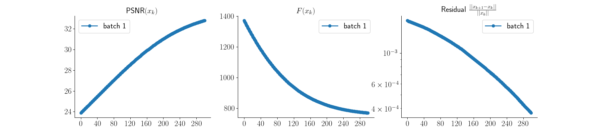

Note
New to DeepInverse? Get started with the basics with the 5 minute quickstart tutorial..
Low-dose CT with ASTRA backend and Total-Variation (TV) prior#
This example shows how to use the Astra tomography toolbox with deepinv, a popular toolbox for tomography with GPU acceleration.
We show how to use the deepinv.physics.TomographyWithAstra operator (which wraps the astra-toolbox backend) to solve a low-dose computed tomography problem with Total-Variation regularization.
deepinv.physics.TomographyWithAstra requires the astra-toolbox to function correctly, which can be easily installed using the command: conda install -c astra-toolbox -c nvidia astra-toolbox.
Additionally, this operator exclusively supports CUDA operations, so running the example requires a device with CUDA capabilities.
import deepinv as dinv
from pathlib import Path
import importlib
import torch
from deepinv.optim import PGD
from deepinv.optim.data_fidelity import L2
from deepinv.utils.plotting import plot, plot_curves
from deepinv.utils import load_torch_url
from deepinv.physics import LogPoissonNoise
from deepinv.optim import LogPoissonLikelihood
if importlib.util.find_spec("astra") is not None:
from deepinv.physics import TomographyWithAstra
else:
raise ModuleNotFoundError(
"The TomographyWithAstra operator runs with astra backend"
)
device = dinv.utils.get_device()
if device == "cpu":
raise RuntimeError(
"The TomographyWithAstra operator only supports CUDA operations, got torch.cuda.is_available() = False"
)
Selected GPU 0 with 1761.25 MiB free memory
Setup paths for data loading and results.#
BASE_DIR = Path(".")
RESULTS_DIR = BASE_DIR / "results"
Load training and test images#
Here, we use downsampled images from the “LoDoPaB-CT dataset”. Moreover, we define the size of the used patches and generate the dataset of patches in the training images.
url = "https://huggingface.co/datasets/deepinv/LoDoPaB-CT_toy/resolve/main/LoDoPaB-CT_small.pt"
dataset = load_torch_url(url)
test_imgs = dataset["test_imgs"].to(device)
img_size = test_imgs.shape[-1]
Definition of forward operator and noise model#
The training depends only on the image domain or prior distribution. For the reconstruction, we now define forward operator and noise model. For the noise model, we use log-Poisson noise as suggested for the LoDoPaB dataset. Then, we generate an observation by applying the physics and compute the filtered backprojection.
mu = 1 / 50.0 * (362.0 / img_size)
N0 = 1024.0
num_angles = 100
noise_model = LogPoissonNoise(mu=mu, N0=N0)
data_fidelity = LogPoissonLikelihood(mu=mu, N0=N0)
physics = TomographyWithAstra(
img_size=(img_size, img_size),
angles=num_angles,
device=device,
noise_model=noise_model,
geometry_type="fanbeam",
n_detector_pixels=2 * img_size,
geometry_parameters={"source_radius": 800.0, "detector_radius": 200.0},
normalize=False,
)
observation = physics(test_imgs)
fbp = physics.A_dagger(observation)
Set up the optimization algorithm to solve the inverse problem.#
The problem we want to minimize is the following:
where \(1/2 \|A(x)-y\|_2^2\) is the a data-fidelity term, \(\lambda \|Dx\|_{2,1}(x)\) is the total variation (TV) norm of the image \(x\), and \(\lambda>0\) is a regularisation parameters.
We use a Proximal Gradient Descent (PGD) algorithm to solve the inverse problem.
# Select the data fidelity term
data_fidelity = L2()
prior = dinv.optim.prior.TVPrior(n_it_max=20)
# Logging parameters
verbose = True
plot_convergence_metrics = (
True # compute performance and convergence metrics along the algorithm.
)
# Algorithm parameters
scaling = 1 / physics.compute_sqnorm(torch.rand_like(test_imgs)).item()
stepsize = 0.99 * scaling
lamb = 3.0 # TV regularisation parameter
max_iter = 300
early_stop = True
# Instantiate the algorithm class to solve the problem.
model = PGD(
prior=prior,
data_fidelity=data_fidelity,
early_stop=early_stop,
max_iter=max_iter,
verbose=verbose,
stepsize=stepsize,
lambda_reg=lamb,
custom_init=lambda observation, physics: physics.A_dagger(
observation
), # initialize the optimization with FBP reconstruction
)
Power iteration converged at iteration 15, ||A^T A||_2=6040.30
Evaluate the model on the problem and plot the results.#
The model returns the output and the metrics computed along the iterations.
The PSNR is computed w.r.t the ground truth image in test_imgs.
# run the model on the problem.
x_model, metrics = model(
observation, physics, x_gt=test_imgs, compute_metrics=True
) # reconstruction with PGD algorithm
# compute PSNR
print(
f"Filtered Back-Projection PSNR: {dinv.metric.PSNR(max_pixel=test_imgs.max())(test_imgs, fbp).item():.2f} dB"
)
print(
f"PGD reconstruction PSNR: {dinv.metric.PSNR(max_pixel=test_imgs.max())(test_imgs, x_model).item():.2f} dB"
)
# plot images. Images are saved in RESULTS_DIR.
imgs = [observation, test_imgs, fbp, x_model]
plot(
imgs,
titles=["Noisy sinogram", "GT", "Filtered Back-Projection", "Recons."],
save_dir=RESULTS_DIR,
)
# plot convergence curves
if plot_convergence_metrics:
plot_curves(metrics, save_dir=RESULTS_DIR)

- 
Filtered Back-Projection PSNR: 20.52 dB
PGD reconstruction PSNR: 29.44 dB
Total running time of the script: (0 minutes 10.476 seconds)